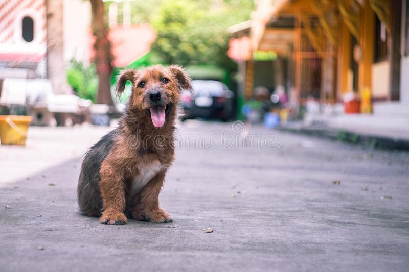

Innocent Souls Veterinary Hospital And Care Centre offers people the choice to adopt a stray animal from our shelter. People can now adopt a stray animal from our shelter in 5 easy steps :
Every animal deserves love and our stray shelter houses some very cute, innocent souls that are in need of a loving home. If you feel you have what it takes to be a pet parent, and you are willing to be responsible for a voiceless soul, fill the form given below.
To refer the adoption policy document and animal adoption contract click here.